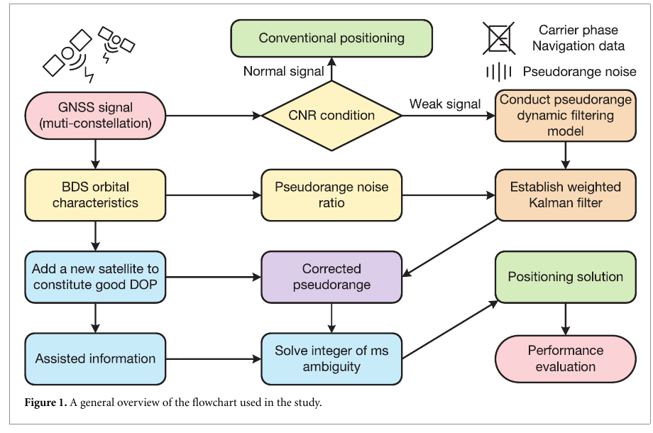
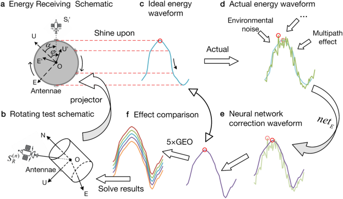
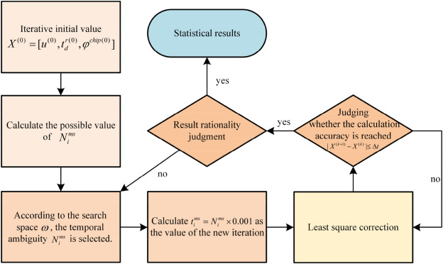

Research Profile
Rundong Li received the B.S. degree in Communication Engineering from Changsha University, Changsha, China, in 2025. He is currently pursuing the M.S. degree in Electronic and Information Engineering at the same university. His current research interests include positioning and attitude measurement algorithms, as well as artificial intelligence applications in satellite navigation.
Satellite Navigation
Positioning Algorithms
Assisted GNSS
Vehicle Attitude
Artificial Intelligence
News
-
Our paper on pseudorange filtering under extremely weak signals was published in Measurement Science and Technology.
-
Delivered an oral presentation at the 5th International Conference on Electronic Information Engineering, Big Data and Computer Technology (EIBDCT 2026) in Haikou, Hainan, China.
-
Our paper on statistical weighting for discontinuous GNSS signals was published in PLOS ONE.
-
Attended the 5th International Conference on Computer Technology, Information Engineering and Electron Materials (CTIEEM 2025) in Harbin, China.
-
Our first-author paper on GEO satellite energy and LSTM-based roll attitude determination was published in Scientific Reports.
-
Our paper on estimating a receiver's approximate position using visible satellites was presented at the China Satellite Navigation Conference.
-
Our first-author paper on one-way fuzzy-time assisted GNSS positioning was published in Heliyon.
-
Our paper on single-satellite multi-epoch time calibration was published in Electronic Technology & Software Engineering.
Publications


Selected figures: IOP Fig. 1, Scientific Reports Fig. 12, and Heliyon Fig. 2; reproduced without modification from the linked open-access articles.
-
2026
A positioning method based on pseudorange filter under extremely weak signals
Chuanliang Tu, Rundong Li, Peng Wu, Shifeng Zhang
Measurement Science and Technology · Journal Article · DOI
-
2025
A roll attitude determination method based on the jamming energy of GEO satellites and an LSTM neural network
Rundong Li, Lu Feng, Peng Wu, Xiangling Deng, Haonan Shi
Scientific Reports · Journal Article · DOI
-
2025
A GNSS receiver positioning algorithm based on weighting the statistical properties of discontinuous signals at lower rotation speeds
Jiahui Gan, Peng Wu, Lu Feng, ZhiChun Dai, Rundong Li
PLOS ONE · SCI Journal Article · DOI
-
2024
Method for estimating the approximate position of a receiver using visual satellites
Junfeng Zhang, Peng Wu, Rundong Li, Zhipeng Ren, Chen Yang, Jiahui Gan, Lu Feng, Haibo Tong, X. Xiao, Y. Chen
China Satellite Navigation Conference · Conference Paper · DOI: 10.26914/c.cnkihy.2024.000052
-
2023
Assisted-GNSS positioning algorithm based on one-way fuzzy time information
Rundong Li, Peng Wu, Lu Feng, Haibo Tong, Zhipeng Ren
Heliyon · Journal Article · DOI
-
2023
A single satellite multi-epoch time calibration method for satellite navigation monitoring stations based on frequency difference estimation
Yonghu Zhang, Lu Feng, Jie Hu, Xu Han, Rundong Li
Electronic Technology & Software Engineering · Journal Article · DOI: 10.20109/j.cnki.etse.2023.02.001
Experience
2025 – Present
M.S., Electronic and Information Engineering
Changsha University · Changsha, Hunan, China
2022.03 – Present
BeiDou Navigation Application Technology Research and Development Center
Research on satellite-navigation positioning, attitude measurement, and intelligent algorithms.
2021 – 2025
B.S., Communication Engineering
Changsha University · Changsha, China
Projects
Acquisition and Tracking Algorithms and FPGA Implementation for BeiDou-3 BOC Signals
Hunan Provincial College Student Innovation and Entrepreneurship Training Program · Principal Investigator · Excellent Project Completion